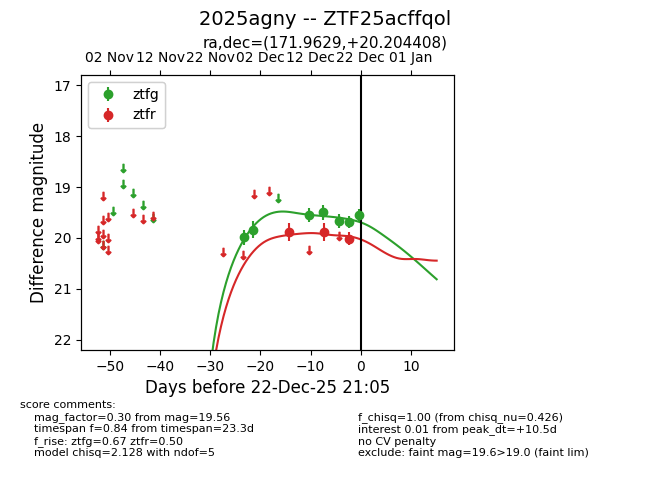
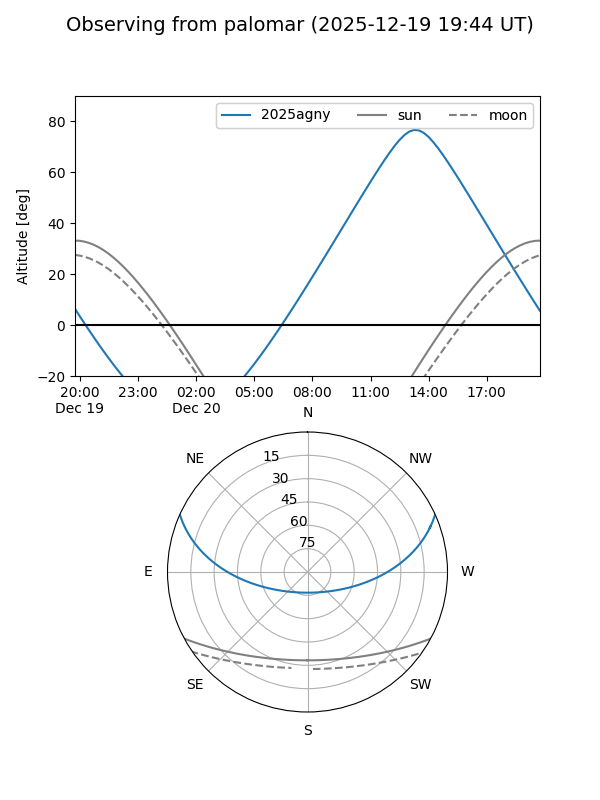

2025agny
Target 2025agny at 2025-12-22 21:06
Aliases and brokers:
FINK: fink-portal.org/ZTF25acffqol
Lasair: lasair-ztf.lsst.ac.uk/objects/ZTF25acffqol
ALeRCE: alerce.online/object/ZTF25acffqol
TNS: wis-tns.org/object/2025agny
YSE: ziggy.ucolick.org/yse/transient_detail/2025agny
alt names
ZTF25acffqol (ztf,fink_ztf)
2025agny (tns,yse)
Coordinates:
equatorial (ra, dec) = 171.9629,+20.20441
equatorial (HMS+DMS) = 11:27:51.08,+20:12:15.87
galactic (l, b) = (228.3641,+69.68050)
Flags:
Photometry:
last ztfg=19.56, ztfr=20.01
7 ztfg, 3 ztfr detections
Lightcurve

Visibility


Additional plots